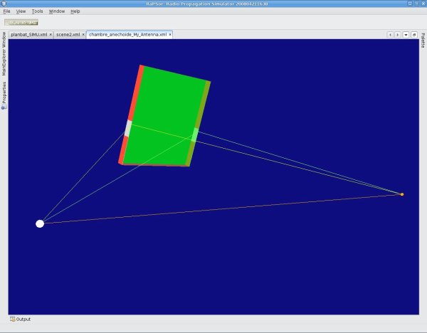
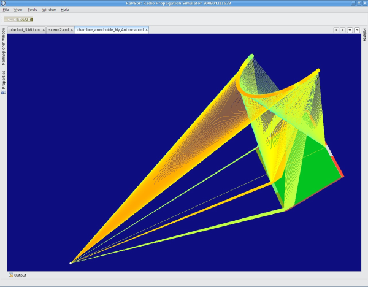
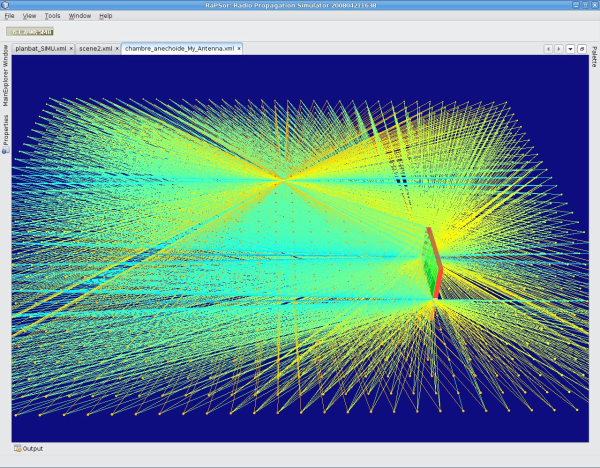
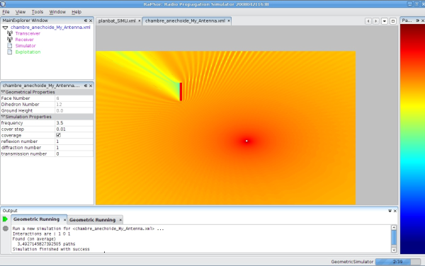
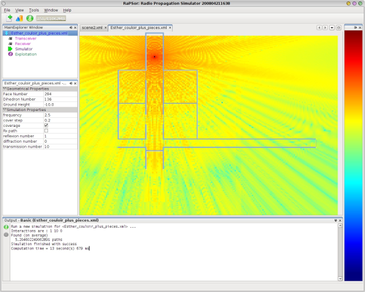

Published on NetBeans Zone by Geertjan Wielenga
RaPSor (Radio Propagation Simulator) is a framework for studying and testing algorithms for ray based simulations, particularly in the area of radio communication. This is an interview with its author, Lilian Aveneau. Lilian is an associate professor (Maître de Conférences) in computer science at the University of Poitiers, where he works in the XLIM/SIC laboratory. His research area is computer graphics, focusing specifically on 3D visibility and rendering with ray methods, together with their usage in the context of radio communication.
RaPSor is a platform based on the NetBeans Platform. It is used for studying and testing algorithms for ray based simulations, mainly for radio communication channel characterisations.
However, this kind of problem is not specific to radio problematics. A "ray" approach can be used in computer graphics for image rendering using ray tracing algorithms. Similarly, it is used in radio communication for coverage simulation and prediction, even though some obvious specifics relate to this scenario. For example, diffraction (scattering) is important in radio communication, as well as specular reflection. Moreover, rays can be used in acoustics for sound simulation in an architectural model, such as when developing a new theatre or cinema project. And so on.
For all these domains, a ray simulation is always based on some geometrical recurrent constraints, which are solved using common knowledge. This is the case in environment modelling, both for geometrical and topological aspects and visibility (e.g., "Which surface is first intersected?" "Are two given points occluded or visible to each other?"). These questions imply an architectural design with ray optimizations.
During my PhD thesis, from 1996 to 1999, I worked in both areas of computer graphics and radio communication. The difference between these areas relates mainly to the wavelength domain.
Then I began to develop two applications, one for computer graphics and one for radio communication, using a common ray kernel written in C. These applications are used by various people in production and in different environments (Linux, IRIX, Windows).
When these users wanted to add new features relating to their research problematics, several problems occured. Firstly, the application had to be compiled on the various systems with different "glibc" versions, for each new user. Secondly, the radio scientists had difficulties with computer science and collaborative development, since they made modifications in their local source code. Hence, we were not able to regroup all these modifications into a single application.
For these reasons, I decided to begin a new application, named RaPSor, with some specific design goals:
A first version was developed in 2006, using new algorithms for the kernel (since that's a great occasion to do new things, isn't it :-)). I chose Java as the language, of course, firstly for its portability and secondly for its simplicity (since radio users do not really understand the unistd brk() function, do they? :-)).
At the same time, a student project was being developed using the NetBeans Platform. It was named RenderTux and was a framework for GLSL shader development and testing. Even though this student project ended up as a profound disaster, it enabled me to look at NetBeans in a new way. I began to learn more about it and then I moved the project to the NetBeans Platform. This greatly simplified the modularity and extensibility aspects of the project.
OK. One thing we're doing is experimenting with a new Antenna model, which is developed by another laboratory. We simulate the Antenna model in an anechoic chamber. The receiver locations used in the real world are reproduced in this scene. Only one big object, a metallic block, can be seen in this context. Hence, only reflections and simple diffractions can occur, as can be observed in these two screenshots:


The next two screenshots are, respectively, a 3d and a 2d view of the same simulation. The simulations are in cover mode, which is a regular grid of receivers, with a 1cm space interval between each receiver location.


Ho, that's a great question. It was a July, a Saturday afternoon. I was reading, on my terrace, the French translation of a wonderful John Irving book, "The Fourth Hand", while listening to the great Hamlet opera by Ambroise Thomas. Then, though I think there was no correlation with Natalie Dessay or Simon Keenlisyde, a cloud began to rain on me. So I walked back inside while thinking "and now, what should I do with my weekend?" (in french: "et maintenant, bordel, je fais quoi ?"). I do not remember exactly why, but it was at that precise moment that I decided to move RaPSor to the NetBeans Platform.
No, in fact I do not remember how the decision was made. One day I decided to do so and now it is done. But I like Irving, Thomas, and so on, so the above is all true. ;-)
Three things? Probably many things can be cited. May be the most useful are:
OK. Below you see an indoor simulation in a real environment, the Esther building at Limoges. You can see we're using reflection and transmission at 2.5Ghz. Roughly speaking, this could be seen as a Wifi simulation.

From my experience, it's very easy to begin with the NetBeans Platform, but we quickly became embarrassed with the many how-to-do problems we encountered.
It is a big platform, with an API that must be studied in order for it to be used. For instance, I'm not sure I really understand how the DataObject/FileObject/File structure really works.
More generally, my main documentation is the book "Rich Client Programming: Plugging into the NetBeans Platform, the second half of which contains a lot of information for dedicated users who want to add new language support to NetBeans IDE, not really for end NetBeans Platform developers that want to create new applications, though that is covered in the first half of the book. (A newer book on the NetBeans Platform is "The Definitive Guide to the NetBeans Platform".)
I began with the NetBeans Platform when NetBeans 6.0 was released (and so with Java 6), when the NetBeans Platform Learning Trail was still being written, so at that time up-to-date information was not easy to find.
I think that, maybe, more use cases of complete sample applications (such as the NetBeans Platform CRUD Application Tutorial) should give more efficient information for newcomers to the NetBeans Platform. And French documentation would be of help to French developers like me, too!
Contributions are welcome, such as new shaders for 3D objects representations, new geometrical models, such as non-planar surfaces, like cylinders, and new simulator/antennas/exploitations modules.
More generally, any comments on the architecture and the code itself are very welcome! ;-)
Animation is the first big new thing. The project aims to add the fourth dimension to the simulation, as was done in the RaPSor kernel.
But this will be done only after some major modifications inside the kernel itself have been completed:
I must correct these problems, after which I can add animation, as the fourth dimension. At that point I will be able to realize my initial weekend idea: watch 3D wrestling (John Irving is also a fan), while listening to Natalie Dessay in a virtual cinema using Wifi for loudspeaker connections, while wearing 3D glasses for the 4D experiment!